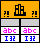

Use the Call Library Function Node to directly call a 32-bit Windows DLL, a OS X Framework, or a Linux Shared Library function. With this node, you can create an interface in LabVIEW to call existing libraries or new libraries specifically written for use with LabVIEW. National Instruments recommends using the Call Library Function Node to create an interface to external code.
|
Note��Be aware when using the Call Library Function Node or writing code that is called by the Call Library Function Node that LabVIEW reserves Windows messages WM_USER through WM_USER+99 for internal use only. |
Right-click the Call Library Function Node and select Configure from the shortcut menu to display the Call Library Function dialog box. Use the Call Library Function dialog box to specify the library, function, parameters, return value for the node, calling conventions, and function callbacks on Windows. When you click the OK button in the Call Library Function dialog box, LabVIEW updates the Call Library Function Node according to your settings, displaying the correct number of terminals and setting the terminals to the correct data types.
|
Note��If you want to run applications or shared libraries created with different versions of LabVIEW on the same computer, the computer must have a version of the LabVIEW Run-Time Engine that is compatible with each version of LabVIEW used to create the applications or shared libraries. |
You must specify either the name of the shared library or the path to the shared library on disk. However, these two techniques produce different consequences when you distribute or relocate your VIs and applications. Refer to the Specifying the Location of Shared Libraries on Disk topic to determine whether to use the name or the path of the shared library for your use case.
 |
Caution��Do not specify the location of a system shared library, such as kernel32.dll, by path. Because LabVIEW automatically includes by-path shared libraries in build specifications, you might distribute a by-path system shared library to another computer inadvertently. Redistributing some shared libraries, such as kernel32.dll, might cause the target computer to crash. Therefore, always specify system shared libraries by name. |
If you want to run applications or shared libraries created on different platforms, use the * wildcard to make the reference to the shared library platform independent. Use * for the file extension and * or ** to the left of the file extension, depending on how you name 32-bit and 64-bit libraries.
The following example illustrates how to use the * wildcard.
| Example | Translation |
|---|---|
| myshared.* | LabVIEW replaces the reference with the appropriate file extension to match the platform that is running the Call Library Node, for example, myshared.dll, myshared.so, and myshared.framework. |
| myshared*.* | LabVIEW replaces the reference with myshared32.* on 32-bit platforms and myshared64.* on 64-bit platforms. You can place the * anywhere to the left of the file extension. For example, my*shared.* can translate to my32shared.*. LabVIEW replaces .* with the appropriate file extension. |
| myshared**.* | LabVIEW replaces the reference with myshared.* on 32-bit platforms and myshared_64.* on 64-bit platforms. You can place the ** anywhere to the left of the file extension. For example, my**shared.* can translate to my_64shared.*. LabVIEW replaces .* with the appropriate file extension. |
|
Note�� Keep the C++ compiler from introducing platform dependence in exported function names through a process called name mangling by using the C++ compiler function export directive, extern "C"{}, in your header file. |
In a multithreaded operating system, you can make multiple calls to a DLL or shared library simultaneously. You can select the thread to execute the library call from the Thread section on the Function tab of the Call Library Function dialog box. The thread options are Run in UI thread and Run in any thread. If you select Run in UI thread, the Call Library Function Node switches from the thread the VI is currently executing in to the user interface thread. If you select Run in any thread, the Call Library Function Node continues in the currently executing thread. By default, all Call Library Function Nodes run in the user interface thread.
Before you configure a Call Library Function Node to run in any thread, make sure that multiple threads can call the function simultaneously. In a shared library, code can be considered thread-safe when:
|
Note��All calls to LabVIEW-built shared libraries should specify Run in any thread. If you configure the Call Library Function Node using LabVIEW-built shared libraries and specify Run in UI thread, LabVIEW might hang and require you to restart. |
Calling conventions define the way to pass information from a piece of code to a function. Use the Calling convention control on the Function tab of the Call Library Function dialog box to select the calling convention for the function. The default calling convention is C. The C calling convention allows variable-length parameter lists.
(Windows) You also can use the standard Windows calling convention, stdcall. The number of parameters passed to the function is fixed.
Refer to the documentation for the DLL you want to call for the appropriate calling conventions.
|
Caution��Using the incorrect calling convention can cause an irregular shutdown of LabVIEW. |
This section discusses the return value and how to add parameters to the Call Library Function Node.
To configure parameters for the Call Library Function Node, navigate to the Parameters tab of the Call Library Function dialog box. Initially, the Call Library Function Node has no parameters and has a return type of Void.
As you configure parameters, the Function Prototype text box displays the C prototype for the function you are building. This text box is a read-only display.
|
Note��If a type library is found, the parameters are updated to match the parameters found in the type library for the selected function. The order of the parameters must match the prototype of the function found in the library. |
The return type for the Call Library Function Node returns to the right terminal of the top terminal. If the return type is Void, the top terminal is unused. Each additional pair of terminals corresponds to a parameter in the Parameters list of the Call Library Function Node. To pass a value to the Call Library Function Node, wire to the left terminal of a terminal pair. To read the value of a parameter after the Call Library Function Node call, wire from the right terminal of a terminal pair. The following illustration shows a Call Library Function Node that has a return type of Void, a string parameter, and a numeric parameter.

For return type, you can set Type to Void, Numeric, or String. Void is only available for return type and is not available for other parameters. Use Void for the return type if your function does not return any values.
Even if the function you call returns a value, you can use Void for the return type. When the function returns a value and you select Void as the return type, the value returned by the function is ignored.
|
Note��The function you are calling can return a C string pointer. If you want to deallocate the pointer, you must do so explicitly as LabVIEW does not automatically deallocate the C string pointer for you. |
 |
Tip��If the function you are calling returns a data type not listed, choose a return data type the same data size as the one returned by the function. For example, if the function returns a char data type, use an 8-bit unsigned integer. A call to a function in a DLL cannot return a pointer because there are no pointer types in LabVIEW. However, you can specify the return type as an integer that is the same size as the pointer. LabVIEW then treats the address as a simple integer, and you can pass it to future DLL calls. |
To add parameters to the Call Library Function Node, navigate to the Parameters tab of the Call Library Function dialog box. Click the Add a parameter button. To remove a parameter, click the Delete the selected parameter button. To change the order of the parameters, use the Move the selected parameter up one and Move the selected parameter down one buttons to the right of the parameter list.
Select the parameter from the Parameters list to edit the data type or parameter name. You can edit the parameter name to something more descriptive, which makes it easier to distinguish between parameters. The parameter name does not affect the call, but it is propagated to output wires. Also, you can edit all fields in the Current parameter section for the selected parameter.
Use the Type pull-down menu to indicate the data type of each parameter. You can select from the following parameter types:
|
Note��If the library function expects a data type not included in the previous list, you must convert the LabVIEW data into the type the function expects. Common data types that require conversion include structures, arrays containing pointers to other data, and pointers to callback functions. |
After you select an item from the Type pull-down menu, you see more items you can use to indicate details about the parameter and about how to pass the data to the library function. The Call Library Function Node has a number of different items for parameter types because of the variety of data types required by different libraries. Refer to the documentation for the library you call to determine which parameter types to use.
The following sections discuss the different parameter types available from the Type pull-down menu.
(Windows) Refer to the labview\examples\Connectivity\Libraries and Executables\Libraries and Executables.lvproj for an example of using data types in shared libraries.
 Open example�
�
Open example�
� Find related examples
Find related examples
For numeric data types, you must indicate the exact numeric type by using the Data Type pull-down menu. You can choose from the following data types:
If you use pointer-sized integers, the Call Library Function Node adapts to the specific operating system it is being executed on and passes data of the appropriate size to and from the library function. LabVIEW represents the data in 64 bits and, on 32-bit platforms, translates the numeric data types to 32-bit integer types.
|
Note�� You can pass extended-precision numbers and complex numbers by selecting Adapt to Type from the Type pull-down menu. However, standard libraries generally do not use extended-precision numbers and complex numbers. |
Use the Pass pull-down menu to indicate whether you want to pass the value or a pointer to the value.
Use the Data Type pull-down menu to indicate the data type of the array. You can choose from the same data types available for numeric parameters.
Specify the dimensions of the array in Dimensions.
Use the Array Format pull-down menu to make one of the following choices:
Use the Minimum size control to have LabVIEW check at run time that the memory LabVIEW allocated for an array data pointer is at least the Minimum size. To indicate the Minimum size of a 1D array, you can enter a numeric value, or, if you configure an integer parameter in the Parameters list, you can select the parameter from the pull-down menu. This option is available only for array data pointers.
|
Note��If you pass in an array that is smaller than the Minimum size, LabVIEW enlarges the size of the array to the minimum. However, if you pass in an array that is bigger than the minimum, the array retains the larger size. |
|
Caution��Do not attempt to resize an array with system functions, such as realloc. Doing so might crash your system. Instead, use one of the memory manager functions, such as NumericArrayResize. |
Use the String Format pull-down menu to indicate the string format. You can choose from the following string formats:
Select a string format that the library function expects. Most standard libraries expect either a C string or a Pascal string. If the library function you are calling is written for LabVIEW, you might want to use the String Handle format. When configuring a Pascal string pointer, you must wire a value to the string input on the block diagram. That value must be initialized with enough characters to hold any new string that may be written to that Pascal string. When configuring a C string pointer, you have two options:
Use the Minimum size control to have LabVIEW check at run time that the memory LabVIEW allocated for a C string pointer is at least the Minimum size. To indicate the Minimum size of a string, you can enter a numeric value, or, if you configure an integer parameter in the Parameters list, you can select the parameter from the pull-down menu. This option is available only for C string pointers.
|
Note��If you pass in a string that is smaller than the Minimum size, LabVIEW enlarges the size of the string to the minimum. However, if you pass in a string that is bigger than the minimum, the string retains the larger size. |
|
Caution��Do not attempt to resize an array with system functions, such as realloc. Doing so might crash your system. Instead, use one of the memory manager functions, such as NumericArrayResize. |
When you call a shared library that includes a waveform data type, you do not have to specify a numeric value from the Data Type pull-down menu; the default is 8-byte Double. However, you must specify Dimensions. If the parameter is a single waveform, specify Dimensions as 0. If the parameter is an array of waveforms, specify Dimensions as 1. LabVIEW does not support an array of waveforms greater than one-dimensional.
|
Note��Pointer-sized signed and unsigned integers are not available in the Data Type pull-down menu for waveforms. |
Specify Dimensions as 0 if the parameter is a single digital waveform. Specify Dimensions as 1 if the parameter is an array of digital waveforms. LabVIEW does not support an array of digital waveforms greater than one-dimensional.
Specify Dimensions as 1 if the Parameter is an array of digital data. Otherwise, specify Dimensions as 0. LabVIEW does not support an array of digital data greater than one-dimensional.
|
Note��You can pass waveforms, digital waveforms, and digital data through shared libraries, but you cannot access the data inside the shared libraries. |
Select one of the following items from the Data Type pull-down menu:
Use Adapt to Type to pass arbitrary LabVIEW data types to DLLs in the following ways:
|
Note��When one or more of the parameters of the function you want to call in a DLL are of types that do not exist in LabVIEW, ensure that each parameter is passed to the function in a way that allows the DLL to correctly interpret the data. Create a skeleton.c file from the current configuration of the Call Library Function Node. By viewing the .c file, you can determine whether LabVIEW will pass the data in a manner compatible with the DLL function. You then can make any necessary adjustments. |
Use Instance Data Pointer to access data allocated for each instance of the Call Library Function Node. The Instance Data Pointer references a pointer sized allocation that you may use at your own discretion. This allocation is also passed to each of the callback functions on the Callbacks tab.
When you configure a Call Library Function Node to call a function, you can use the Callback tab to specify other functions within the same library to call at the following times:
|
Note��You cannot use the Callback tab to pass callback functions as parameters to library functions. The Call Library Function Node cannot directly call library functions that require a callback function as a parameter, but you can create a wrapper library to implement such calls. |
You might encounter a function that expects data in a form that the Call Library Function Node cannot pass. Specifically, the Call Library Function Node does not support structures or arrays containing a pointer to other data or structures containing flat arrays that can be variably sized. You can call a function that expects an unsupported data type in the following ways:
Use error checking to ensure no errors occur if you call a DLL or shared library with the Call Library Function Node.
The Maximum and Default controls on the Error Checking tab of the Call Library Function dialog box allow LabVIEW to recover from unhandled exceptions that occur in the configuration of the Call Library Function Node or during a call to a shared library or DLL. The Disabled control on the Error Checking tab disables error checking but improves the execution speed of the Call Library Function Node.
If you use the Call Library Function Node to call a shared library generated by LabVIEW, the node automatically calls the LVDLLStatus function embedded in the shared library. For these LabVIEW-generated shared libraries, this function detects certain errors, including the following:
In these cases, the Call Library Function Node returns error 1003.